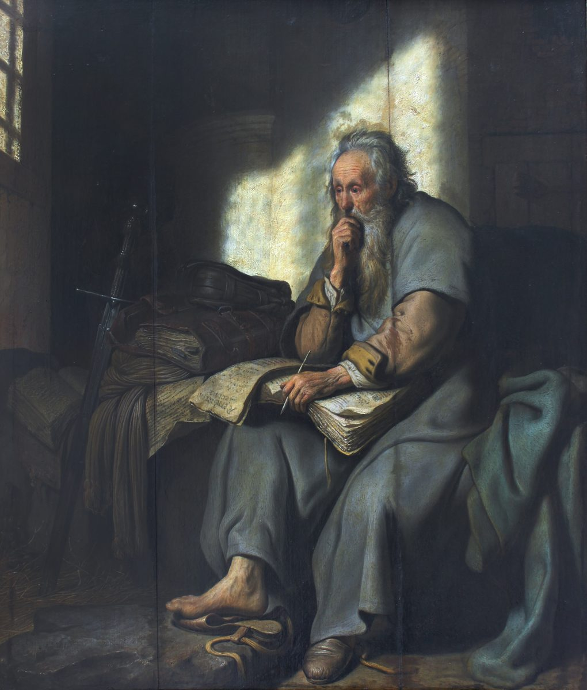

Ephesians 3 — The Mister Translation

⚠ Rembrandt was about twenty-one when he painted verse 1’s ‘prisoner of Christ Jesus’: Paul in a cell, pen in hand, light coming through the bars. The letter itself does not say where Paul was held. The sword is his traditional emblem in art, from the tradition that he was beheaded.

Translator’s Notes
⚠ “For this reason I, Paul, the prisoner of Christ Jesus —” and a sentence that breaks off. Verse 1 has no main verb. Paul starts a prayer, turns aside for twelve verses to explain his commission, and picks the sentence up again at v14 with the same two words, Toutou charin, “For this reason”; this translation marks the break with a dash. “Prisoner of Christ Jesus” stands in three verses of the New Testament: this one and Philemon 1:1 and 1:9, “a prisoner of Christ Jesus.” The letter does not say where he is held. It presents itself as Paul’s; whether he wrote it himself or a follower wrote in his name is argued, and this page reads the letter as it presents itself. The KJV reads “the prisoner of Jesus Christ for you Gentiles”; the ASV ends the verse with a dash, “in behalf of you Gentiles,--”; the TLB reads “am here in jail because of you.”
“The stewardship of the grace of God.” Oikonomia, the management of a household, the word behind English “economy,” stands in nine verses of the New Testament: the manager of Luke 16:2, “Hand over the account of your management” (and 16:3, 16:4); 1 Corinthians 9:17, “a stewardship entrusted to me”; Ephesians 1:10, “a stewardship of the fullness of the times”; here and v9; Colossians 1:25, “the stewardship of God given to me for you”; and 1 Timothy 1:4, “God’s stewardship that is in faith.” The KJV reads “the dispensation of the grace of God,” the English word from which the later theological system called dispensationalism took its name; the NIV reads “the administration of God’s grace”; the NWT 1984 reads “the stewardship of the undeserved kindness of God” (dictionary). “If indeed you have heard” is read by some as a sign that the readers did not know Paul in person, and so as bearing on whether the letter was first sent to Ephesus; others read it as a polite assurance, as the NIV does: “Surely you have heard about the administration of God’s grace.”
“The mystery was made known to me … as I wrote before in brief.” The mystery is the one named at Ephesians 1:9, “the mystery of his will”; “by revelation” echoes Galatians 1:12, “through a revelation of Jesus Christ.” “As I wrote before” is most often read as pointing back within this letter, to 1:9–10 and 2:11–22; the TLB reads it as another letter, “as I briefly mentioned before in one of my letters.” The NWT 1984 prints “the sacred secret” for mystērion throughout (dictionary).
⚠ “Not made known … as it has now been revealed.” Hōs, “as,” can make the contrast a matter of degree, not as clearly as now, or of kind, not at all; the parallel at Colossians 1:26 reads “the mystery hidden from the ages and from the generations — but now made plain to his holy ones.” The “apostles and prophets” are the pair of Ephesians 2:20, the foundation the building stands on. Some read “his holy apostles” as the words of a writer looking back on the apostles as a finished group; others hear nothing more than the ordinary “holy ones” of the letter. The KJV reads “as it is now revealed unto his holy apostles and prophets by the Spirit”; the ASV reads “in the Spirit.”
⚠ “Co-heirs and co-members of the body and co-sharers.” Here is the mystery’s content, and Paul builds it from three words that all begin syn-, “together with,” so this translation keeps the “co-” three times (dictionary). Synklēronomos, “co-heir,” stands in four verses: Romans 8:17, “heirs together with Christ”; this one; Hebrews 11:9, “heirs with him of the same promise”; and 1 Peter 3:7. Syssōmos, “co-member of the body,” stands in one verse, this one. Symmetochos, “co-sharer,” stands in two verses, this one and Ephesians 5:7. The Greek does not name with whom they share; the NIV supplies it, “heirs together with Israel,” and the Spanish NVI does the same. The KJV reads “fellowheirs, and of the same body, and partakers of his promise”; the ASV reads “fellow-heirs, and fellow-members of the body, and fellow-partakers.”
“A servant according to the gift of the grace of God.” Diakonos is the “servant” of Colossians 1:25, “of which I became a servant.” “According to the working of his power” is the language of Ephesians 1:19, “according to the working of the might of his strength”: the power that raised Christ is the power that made Paul a servant. The KJV reads “Whereof I was made a minister”; the NIV reads “I became a servant of this gospel.”
⚠ “Less than the least of all the holy ones.” Elachistoteros stands in one verse of the New Testament, this one: a comparative built on a superlative, “leaster,” a form the grammar does not allow, made on purpose. At 1 Corinthians 15:9 Paul is “the least of the apostles”; here he is below the least of all the holy ones (dictionary). The KJV and the ASV read “less than the least of all saints”; the Douay reads only “the least of all the saints,” following the Vulgate’s minimo; the TLB reads “the most useless Christian there is.”
“The untraceable riches of Christ.” Anexichniastos, from ichnos, “footprint,” stands in two verses of the New Testament: Romans 11:33, “how untraceable his ways,” and this one. Riches with no track to follow to their end (dictionary). The KJV reads “the unsearchable riches of Christ”; the NIV reads “the boundless riches of Christ”; the NWT 1984 reads “the unfathomable riches of the Christ.”
“The stewardship of the mystery” — or the fellowship. The critical text and the Byzantine majority read oikonomia, the word of v2; the Received Text reads koinōnia, “fellowship,” and so the KJV reads “what is the fellowship of the mystery”; the ASV reads “the dispensation of the mystery.” The same texts add to “who created all things” the words “through Jesus Christ,” and the KJV has them, “who created all things by Jesus Christ.” “Hidden from the ages” matches 1 Corinthians 2:7, “God’s wisdom in a mystery, the hidden one.”
⚠ “The many-sided wisdom of God … to the rulers and the authorities in the heavenly places.” Polypoikilos, “many-coloured,” stands in one verse of the New Testament, this one. The audience is the powers of Ephesians 1:21, “far above every rule and authority,” and the display is the congregation itself, Jews and nations made one body (dictionary); whether the powers are hostile, as they will be at 6:12, or angels in general, is read both ways. The KJV reads “unto the principalities and powers in heavenly places might be known by the church the manifold wisdom of God”; the NWT 1984 reads “through the congregation the greatly diversified wisdom of God.”
“Boldness and access with confidence through faith in him.” Prosagōgē, “access,” stands in three verses of the New Testament: Romans 5:2, “our access by faith into this grace,” Ephesians 2:18, “through him we both have access, in one Spirit, to the Father,” and this one. Parrēsia, “boldness,” is the free speech of a citizen (prosagōgē, parrēsia). Dia tēs pisteōs autou can be “through faith in him” or “through his faithfulness,” the same question as at Galatians 2:16. The KJV and the Douay read “by the faith of him”; the ASV and the NWT 1984 read “through our faith in him.”
“That you not lose heart over my afflictions.” Enkakeō is the “lose heart” of Galatians 6:9 (dictionary). The Greek does not say who might lose heart: the readers, as most of the shelf takes it, or Paul himself, “I ask that I not lose heart.” His afflictions are “your glory” because they are suffered on their behalf. The KJV reads “Wherefore I desire that ye faint not at my tribulations for you, which is your glory”; the NIV reads “not to be discouraged because of my sufferings for you.”
“For this reason I bend my knees before the Father.” The sentence begun at v1 resumes. Kneeling is the posture of Romans 14:11, “every knee will bow to me,” the same verb kamptō. The Byzantine text adds “of our Lord Jesus Christ,” and so the KJV: “I bow my knees unto the Father of our Lord Jesus Christ”; the ASV reads “I bow my knees unto the Father.”
⚠ “From whom every family in heaven and on earth is named” — Father and family. Patēr, “Father,” and patria, “family,” a line descended from one father, are one word apart, and English cannot keep the pair (dictionary). Patria is the “house and family line of David” at Luke 2:4 and “all the families of the earth” at Acts 3:25. Pasa patria, with no article, is “every family,” not “the whole family”; the KJV reads “Of whom the whole family in heaven and earth is named.” The Douay follows the Vulgate’s paternitas, “Of whom all paternity in heaven and earth is named”: fatherhood itself named from the Father. The NWT 1984 reads “to whom every family in heaven and on earth owes its name.”
“Strengthened … in the inner man … rooted and grounded in love.” “The inner man” stands in two verses of the New Testament: Romans 7:22, “I delight in the law of God according to the inner man,” and this one; 2 Corinthians 4:16, “our inner self is being renewed,” says it another way (dictionary). Katoikeō is to settle and live in a house, the “dwelling place” word of 2:22. “Rooted and grounded” joins a tree to a building. “Rooted” stands in two verses, this one and Colossians 2:7. “In love” can close the first clause, as the NWT 1984 takes it, “to have the Christ dwell through [YOUR] faith in YOUR hearts with love,” or open the second, as the KJV does, “that ye, being rooted and grounded in love.”
⚠ “The breadth and length and height and depth” — of what? The Greek names four dimensions and no object. The next verse speaks of the love of Christ, and many take that as the thing measured; others read the plan of God, the temple of 2:21, or the whole of creation. The NIV supplies the object, “how wide and long and high and deep is the love of Christ”; the ASV leaves it open, “what is the breadth and length and height and depth.” The Byzantine text has “depth and height,” and so the KJV reads “the breadth, and length, and depth, and height.”
“To know the love of Christ that surpasses knowledge.” The sentence asks them to know what is beyond knowing: gnōnai, “to know,” beside tēs gnōseōs, “knowledge.” Hyperballō, “surpass,” is the “surpassing greatness” of Ephesians 1:19. “Filled to all the fullness of God” recalls Ephesians 1:23, “the fullness of the one who fills all things in all.” The KJV reads “the love of Christ, which passeth knowledge”; the NWT 1984 reads “filled with all the fullness that God gives.”
“Beyond all things, far more abundantly than what we ask or think.” Paul stacks the prepositions: hyper panta, “beyond all things,” and then hyperekperissou, “over-out-of-abundance,” which stands in three verses of the New Testament: this one, and 1 Thessalonians 3:10 and 5:13. The power is the one “at work in us,” the working of v7 and of 1:19. The KJV reads “exceeding abundantly above all that we ask or think”; the NIV reads “immeasurably more than all we ask or imagine”; the NWT 1984 reads “do more than superabundantly beyond all the things we ask or conceive.”
“Glory in the congregation and in Christ Jesus, to all the generations of the age of the ages.” The Byzantine text lacks the “and,” so the KJV reads “Unto him be glory in the church by Christ Jesus throughout all ages, world without end. Amen”; the ASV reads “in the church and in Christ Jesus unto all generations for ever and ever.” The phrase joins two ways of saying forever, “all the generations” and “the age of the ages,” the second as at Galatians 1:5. The Amen closes the prayer the chapter began in v1, and with it the first half of the letter; the next three chapters turn from what God has done to how the readers are to walk.
Patterns worth carrying forward
Where this translation keeps the exact words: “stewardship” for oikonomia at 3:2 and 3:9, as at Ephesians 1:10 and Colossians 1:25; “mystery,” as at 1:9; “co-heirs,” “co-members of the body” and “co-sharers,” with the shared syn- kept three times; “less than the least” for the doubled degree of elachistoteros; “untraceable,” as at Romans 11:33; “rulers and authorities,” the pair of 1:21; “congregation” for ekklēsia; “access,” as at 2:18 and Romans 5:2; “lose heart,” as at Galatians 6:9; “every family” for pasa patria; “the inner man,” as at Romans 7:22; and “the age of the ages,” as at Galatians 1:5.
Echoes paid. The one new man of 2:15, now named as the mystery’s content: the nations co-heirs and co-members of one body; the apostles and prophets of 2:20; the mystery of 1:9 and the stewardship of 1:10; the heavenly places and the rule and authority of 1:21; access from 2:18; the dwelling place of 2:22; the surpassing greatness and the working of his power from 1:19; the fullness of 1:23; and the prayer for power to grasp a love that surpasses knowledge that chapter 2 promised.
Echoes planted. The prisoner again, “in the Lord,” at 4:1, where the letter’s second half begins; co-sharers at 5:7; the rulers and authorities in the heavenly places at 6:12; rooted at Colossians 2:7; and the mystery once more at 5:32 and 6:19.
Next in this letter: Ephesians 4, already on these pages. The prisoner urges a walk worthy of the calling: one body, one Spirit, one Lord, one faith, one baptism, and the gifts given for building up the body.